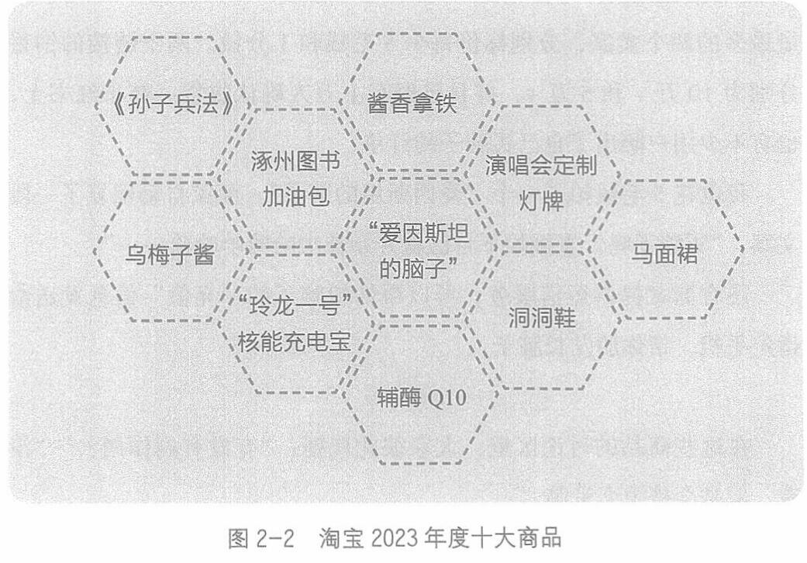

第二章 情绪价值与情感需求
二、情绪价值的付费点
1.心理账户
心理账户，是构成情绪价值的第三个要素。如果说生理唤起和认知标记决定了情绪的产生，那么心理账户则决定了用户是否会付费，以及愿意付多少。
心理账户这一概念来自诺贝尔经济学奖得主、行为经济学家理查德·泰勒(Richard Thaler)。
有关心理账户的文章和书籍都非常多，你可以自行搜索，扩展阅读。
淘宝每年都会公布一个年度十大商品榜单，2023年度的上榜商品见图2-2。

037